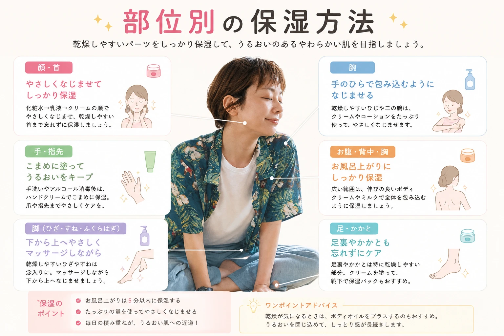

乾燥知らずのうるおい肌へ ボディ保湿完全ガイド
ボディ保湿は、肌の乾燥を防ぎ、なめらかで健康的な肌を保つために欠かせない毎日のケアです。 この記事では初心者の方でも実践できる保湿方法や、ボディクリーム・ボディミルク・ボディオイルの選び方、正しい使い方まで詳しく紹介します。
この記事でわかること
- ✔ 保湿が必要な理由
- ✔ 保湿するベストタイミング
- ✔ ボディクリームの選び方
- ✔ 部位別の保湿方法
- ✔ 毎日続けるコツ
ボディ保湿とは？
ボディ保湿とは、肌にうるおいを与え、水分が逃げるのを防ぐためのボディケアです。 顔と同じように、腕・脚・背中・首・デコルテなど全身の肌も毎日乾燥しています。 乾燥した肌はカサつきや粉吹きだけでなく、肌荒れやかゆみなどの原因にもなるため、毎日の保湿が大切です。
特にお風呂上がりは肌の水分が蒸発しやすいため、保湿ケアをする絶好のタイミングです。 毎日5分程度のケアでも続けることで、なめらかで触れたくなるような肌を目指せます。
ボディ保湿のメリット
- ✔ 肌の乾燥を防ぐ
- ✔ 肌荒れ・かゆみ予防
- ✔ 肌のキメを整える
- ✔ ハリ・ツヤを保つ
- ✔ 清潔感のある肌を目指せる
保湿が必要な理由

肌の一番外側には「角質層」があり、水分を保ちながら外部刺激から肌を守る働きをしています。 しかし、加齢や紫外線、エアコン、摩擦、熱いお湯などの影響で水分は少しずつ失われていきます。
乾燥すると起こること
- 肌がカサカサする
- 白く粉を吹く
- かゆみが出る
- ゴワつきを感じる
- 肌荒れしやすくなる
これらを防ぐためにも、毎日の保湿習慣が大切です。
注意
乾燥した状態を放置すると、肌のバリア機能が低下し、刺激を受けやすくなることがあります。 乾燥が気になったら早めに保湿を行いましょう。
保湿するベストタイミング
保湿はタイミングによって効果が変わります。 もっともおすすめなのは、お風呂上がり5分以内です。
| タイミング | おすすめ度 |
|---|---|
| お風呂上がり5分以内 | ★★★★★ |
| 朝の着替え前 | ★★★★☆ |
| 乾燥が気になった時 | ★★★★☆ |
| 寝る前 | ★★★★★ |
お風呂上がりは肌に少し水分が残っているため、ボディクリームやボディミルクがなじみやすくなります。
正しい保湿方法
- やさしく体を洗う
- タオルで軽く水分を拭き取る
- ボディクリームを手のひらで温める
- 腕・脚・首・デコルテへやさしく伸ばす
- 乾燥しやすい部分は重ね塗りする
ポイント
強くこすらず、手のひら全体を使ってゆっくりなじませることで、肌への負担を減らしながら保湿できます。
保湿アイテムの選び方
ボディ保湿アイテムにはさまざまな種類があります。 肌質や季節に合わせて選ぶことで、より快適に保湿ケアを続けられます。
| アイテム | おすすめの人 | 特徴 |
|---|---|---|
| ボディミルク | 普通肌・初心者 | 軽い使い心地で毎日使いやすい |
| ボディクリーム | 乾燥肌 | 保湿力が高く冬にもおすすめ |
| ボディオイル | ツヤ肌を目指したい人 | 肌をやわらかく整える |
| ジェルタイプ | 夏・脂性肌 | ベタつきにくく爽やかな使用感 |
初心者におすすめ
迷ったら毎日使いやすい「ボディミルク」から始めましょう。 乾燥が気になる季節はボディクリームとの併用がおすすめです。
部位別の保湿方法

腕
腕は紫外線や乾燥の影響を受けやすい部分です。 毎日やさしくクリームをなじませましょう。
脚
すねは皮脂が少なく乾燥しやすい部位です。 入浴後は忘れずに保湿しましょう。
ひじ・ひざ
角質がたまりやすい部分なので、 保湿を重ね塗りするとより効果的です。
かかと
乾燥しやすく硬くなりやすいため、 夜はクリームをたっぷり塗り、 靴下を履いて寝るのもおすすめです。
首・デコルテ
年齢が出やすい部分です。 顔のお手入れと一緒に保湿する習慣をつけましょう。
季節ごとの保湿ポイント
春・秋
肌がゆらぎやすい季節です。 低刺激の保湿アイテムを選びましょう。
夏
汗をかいても乾燥することがあります。 ベタつきにくいジェルやミルクタイプがおすすめです。
冬
最も乾燥しやすい季節です。 クリームやオイルを使い、 乾燥しやすい部分は重ね塗りしましょう。
ワンポイント
季節によって保湿アイテムを使い分けることで、 一年中快適なボディケアを続けられます。
毎日5分でできる保湿ルーティン
ボディ保湿は、高価なアイテムを使うことよりも「毎日続けること」が大切です。 毎日の生活の中に取り入れやすい習慣を作ることで、肌の乾燥を防ぎやすくなります。
おすすめルーティン
- ぬるめのお湯で入浴する
- 体をやさしく洗う
- タオルで軽く水分を拭き取る
- 5分以内にボディクリームを塗る
- 乾燥しやすい部分は重ね塗りする
- 朝は必要に応じて保湿を追加する
やってはいけない保湿方法
NGポイント
- 熱すぎるお湯で長時間入浴する
- ゴシゴシ強く体を洗う
- 乾燥してから保湿する
- クリームを少量しか使わない
- 毎日続けない
これらは乾燥を悪化させる原因になることがあります。 肌への刺激を減らし、毎日やさしく保湿することを心がけましょう。
よくある質問
Q. ボディクリームは毎日塗った方がいいですか？
はい。 毎日保湿することで肌の乾燥を防ぎ、うるおいを保ちやすくなります。
Q. 朝も保湿した方がいいですか？
乾燥しやすい方や冬場は、朝も保湿するとより効果的です。
Q. ボディオイルだけでも十分ですか？
オイルだけでも使えますが、乾燥が気になる方はボディクリームやボディミルクと組み合わせると、より保湿しやすくなります。
まとめ
ボディ保湿は、美しい肌づくりの基本です。 毎日5分程度のケアを続けるだけでも、乾燥や肌荒れを防ぎ、なめらかで清潔感のある肌を目指せます。
今日から始める3つのポイント
- ✔ お風呂上がり5分以内に保湿する
- ✔ 自分の肌質に合った保湿アイテムを選ぶ
- ✔ 毎日無理なく続ける
毎日の小さな積み重ねが、将来の肌の美しさにつながります。 ぜひ今日からボディ保湿を習慣にしてみましょう。
おすすめのボディ保湿アイテム
毎日の保湿を続けるためには、自分に合ったアイテム選びも大切です。